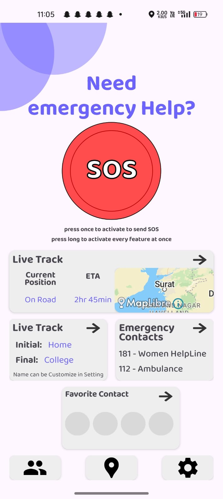
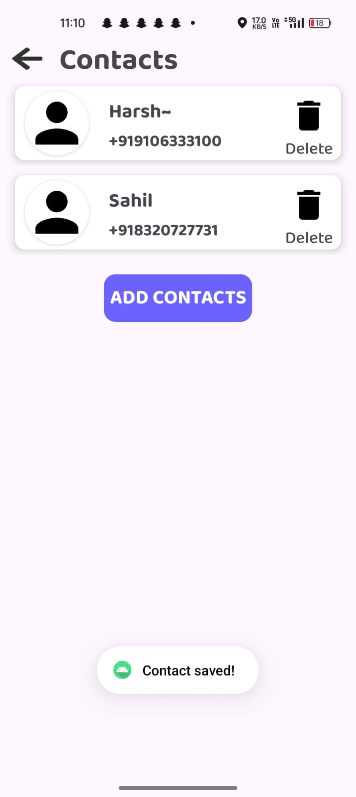

Safe Track
About
Feature
Resource
Contact
Emergency Contacts

Step-1 Go to app's home screen and click on live track
Step-2 Click on Favorite Contacts. From here, you can add your contacts as an emergency contacts.

You can remove contact by clicking on delete button